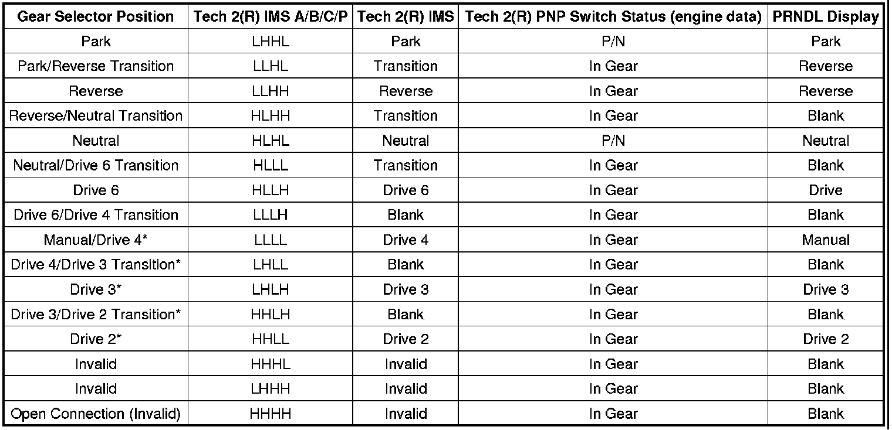

A/T Controls - DTC P1825/P182E or P1915/MIL ON
INFORMATIONBulletin No.: 08-07-30-020E
Date: March 03, 2010
Subject: Diagnostic Information for MIL Illuminated with DTC P1825, P182E or P1915 Found Current or as History Code in TCM, No PRNDL Display, Potential No Engine Crank
Models:
2006-2009 Cadillac XLR-V
2006-2010 Cadillac STS-V
2007-2009 Cadillac SRX, XLR
2007-2010 Cadillac Escalade, Escalade ESV, Escalade EXT, STS
2008-2010 Cadillac CTS
2009-2010 Cadillac CTS-V
2006-2010 Chevrolet Corvette
2007-2010 Chevrolet Silverado
2008-2010 Chevrolet Suburban
2009-2010 Chevrolet Avalanche, Tahoe
2010 Chevrolet Camaro, Express
2007-2010 GMC Sierra, Yukon Denali, Yukon XL Denali
2008-2010 GMC Yukon XL
2009-2010 GMC Yukon
2010 GMC Savana
2008-2009 Pontiac G8
2008-2009 HUMMER H2
with 6L50 RPO MYB, 6L80 RPO MYC or 6L90 RPO MYD Automatic Transmission
Supercede:
This bulletin is being revised to remove the contact information in Step 4 under HISTORY DTC heading and update the models and model years. Please discard Corporate Bulletin Number 08-07-30-020D (Section 07 - Transmission).
The following diagnostic information will aid the technician if the MIL is illuminated with DTC P1825, P182E or P1915. The DTC may be found current or as a history code in the TCM along with a no PRNDL display and the potential for no engine crank.
1. Use the Tech 2(R) to capture and record Freeze Frame/Failure Data for all DTCs set. Review the data to determine:
- Vehicle speed, commanded gear, transmission temperature, throttle position, transmission ratio, transmission input and output speed sensor RPM when DTC set (use to attempt to duplicate failure)
- IMS A/B/C/P and IMS state
2. Using the Tech 2(R), navigate to transmission data and scroll down to IMS. With the ignition ON and the engine OFF, observe the IMS A/B/C/P switch states and IMS states for each shift lever detent position. The chart following this list shows the correct states.
3. If all IMS readings are normal, monitor the PNP status in the engine data list during DTC setting to isolate a possible open or short to ground on the dedicated PNP signal between the TEHCM and the ECM.
4. If the vehicle is a 2009 CTS, STS or SRX, proceed to Step 5 in the History DTC section below before continuing with any additional evaluations.
5. If all IMS and PNP readings are normal, the condition is intermittent in nature and determination of the defective component will be made based on freeze frame data and previous repair history or warranty data. Proceed to History DTC below. If the readings are not as specified above, the fault is still active. Proceed to the Active DTC section below to determine which component(s) is defective.

HISTORY DTC
If all readings are normal per Step 2 above, capture and record Freeze Frame/Failure Data, clear DTCs and attempt to duplicate the fail conditions.
1. If the DTC does not reset and the original freeze frame data reports an IMS A/B/C/P code of "HLLL" and the IMS state of "Neutral/Drive 6", complete the following:
Important
Typical Freeze Frame operating conditions: ISS >500 RPM, OSS =0 RPM or low value, Engine Torque >30 Nm.
Important
There is no calibration update for vehicles equipped with a 6L90 RPO MYD transmission or 2008 model year vehicles. These calibrations were updated before production began.
- Update the TCM calibration file to the latest released on TIS2WEB.
- Inspect the shift cable for incorrect routing, kinks, severe bends and/or a damaged or twisted rubber boot at the transmission end of the cable.
- Check and ensure proper cable adjustment.
- Determine if the shift lever can be hung-up between Neutral and Drive 6. If so, there may be excessive drag in the system.
- Move the shift lever through each detent position, ensuring positive detent feel. If any concern is noted, remove the transmission oil pan and repeat the shift lever movement. Ensure that the detent spring roller moves to the bottom of the valley on the detent plate for each shift lever position. Inspect the detent spring roller and ensure it is centered on the detent plate. The spring arms should not be rubbing on either the IMS arm or detent plate.
- After completing the above steps, test drive the vehicle, moving the shifter through all detent positions. If no issues are found, ensure all DTC codes are cleared from history and return the vehicle to the customer. If the vehicle has been returned to the dealer with this Freeze Frame bit codes after repairs, contact the person(s) below in Step 4.
2. If the DTC does not reset and original freeze frame data reports an IMS A/B/C/P code of "HHLH" and IMS state of "Blank", complete the following:
Important
Typical Freeze Frame operating conditions: ISS >500 RPM, OSS >0 RPM, Vehicle Speed >0 MPH
- Replace the Internal Mode Switch (IMS) if the Vehicle Build Date is prior to March 31, 2007. If not, continue with this bulletin.
Important
There is no calibration update for vehicles equipped with a 6L90 RPO MYD transmission or 2008 model year vehicles. These calibrations were updated before production began.
- Update the TCM calibration file to the latest released on TIS2WEB.
- After completing the above steps, test drive the vehicle, moving the shifter through all detent positions. If no issues are found, ensure all DTC codes are cleared from history and return the vehicle to the customer.
3. If the DTC does not reset and original freeze frame data reports an IMS A/B/C/P code of "HHHL" and IMS state of "Invalid", complete the following:
Important
Typical Freeze Frame operating conditions: ISS >500 RPM, OSS =0 RPM, Vehicle Speed >0 MPH
- Replace the Internal Mode Switch (IMS) if the Vehicle Build Date is prior to March 31, 2007. If not, continue with this bulletin.
Important
There is no calibration update for vehicles equipped with a 6L90 RPO MYD transmission or 2008 model year vehicles. These calibrations were updated before production began.
- Update the TCM calibration file to the latest released on TIS2WEB.
- After completing the above steps, test drive the vehicle, moving the shifter through all detent positions. If no issues are found, ensure all DTC codes are cleared from history and return the vehicle to the customer.
4. If the DTC does not reset and original freeze frame data reports an IMS A/B/C/P code of LLLH, LLHL, LHLL or PNP Switch is P/N in all gears, failure is a short to ground condition and is most likely in the Control Solenoid (with body and TCM) Valve Assembly (TEHCM), complete the following:
- Obtain the following data and contact the PQC as the Control Solenoid (with body and TCM) Valve Assembly (TEHCM) is currently on restriction. The PQC will engage engineering for additional diagnostic support.
- Capture or record freeze frame or fail records if a DTC is set.
- Document the diagnostics completed leading to the decision to replace the control solenoid valve and transmission control module.
Important
There is no calibration update for vehicles equipped with a 6L90 RPO MYD transmission or 2008 model year vehicles. These calibrations were updated before production began.
- Update the TCM calibration file to the latest released on TIS2WEB.
- After completing the above steps, test drive the vehicle, moving the shifter through all detent positions. If no issues are found, ensure all DTC codes are cleared from history and return the vehicle to the customer.
5. If the DTC does not reset and the original freeze frame data reports an IMS A/B/C/P code of LLLH and the vehicle is a 2009 CTS, STS or SRX, the condition is most likely caused by an incorrectly adjusted shift linkage.
Important
Typical Freeze Frame operating conditions: ISS and OSS both =0 RPM or ISS and OSS both >0 RPM and/or vehicle is in some drive gear (transmission gear ratio matches one of the forward gear ratios).
- Using a Tech 2(R), pull backward firmly/hard on the shifter to verify that the IMS A/B/C/P code remains at the correct HLLH reading. If it toggles to LLLH or LLLL, the linkage is not adjusted properly.
- Perform the Shift Control Linkage Adjustment as detailed in SI.
- After adjustment, using a Tech 2(R), pull backward firmly/hard on the shifter to verify that the IMS A/B/C/P code remains at the correct HLLH reading. If it toggles to LLLH or LLLL, the linkage is not adjusted properly. Repeat the adjustment.
- If no shifter adjustment issues are found, return to Step 4.
ACTIVE DTC/FAULT ACTIVE
If the fault is still active per Step 2 above, or after a test drive, continue with component tests defined below:
1. Ensure proper system performance:
- Inspect the shift cable for incorrect routing, kinks, severe bends and/or a damaged or twisted rubber boot at the transmission end of the cable.
- Check and ensure proper cable adjustment.
- Remove the transmission oil pan and repeat the shift lever movement, ensuring that the detent spring roller moves to the bottom of the valley on the detent plate for each shift lever position. Inspect the detent spring roller and ensure it is centered on the detent plate. The spring arms should not be rubbing on either the IMS arm or detent plate.
2. Disconnect the IMS connector at the Control Solenoid (w/body and TCM) Valve Assembly (TEHCM). With the Tech 2(R) connected and the ignition ON and engine OFF, the Tech 2(R) should report all IMS states A/B/C/P as high (H) and the PNP Switch should display "In Gear".
- If any of the A/B/C/P circuits displays low (L), the TEHCM is faulty and should be replaced. If the Vehicle Build Date is prior to March 31, 2007, also replace the IMS.
- If the PNP Switch Circuit (Tech 2(R) Engine data) displays "Park/Neutral", a short exists in the TEHCM or the wiring connecting it to the ECM. Disconnect the transmission pass-through connector. Check for continuity between the pass-through P/N Signal pin 3 (refer to Automatic Transmission Inline 16-Way Connector End View in SI) and the valve body assembly. If continuity exists, a short to ground is present in the TEHCM and it should be replaced. If the Vehicle Build Date is prior to March 31, 2007, also replace the IMS. If there is no continuity, the problem is outside the transmission.
Important
The bad bit should be consistent with the bad bit identified in Step 2.
3. Connect a 3-amp fused jumper wire between the common pin (Pin A) and pins B, C, D & F in the TEHCM IMS connector (refer to Automatic Transmission Internal Connector End Views in SI). As each circuit (B, C, D & F) is grounded with ignition ON, engine OFF, the Tech 2(R) should display low (L) for the IMS bit.
- If any of the A/B/C/P circuits displays high (H) when grounded, the TEHCM is faulty and should be replaced. If the Vehicle Build Date is prior to March 31, 2007, also replace the IMS.
- If Pin F in the PNP Switch Circuit (Tech 2(R) Engine data) displays "In Gear" when grounded, an open exist in the TEHCM or the wiring connecting it to the ECM. Disconnect the transmission pass-through connector. Check for continuity between the pass-through P/N Signal Pin 3 (refer to Automatic Transmission Inline 16-Way Connector End View in SI) and TEHCM IMS connection Pin F (refer to Automatic Transmission Internal Connector End Views in SI). If there is continuity, the problem is outside the transmission. If there is no continuity, replace the TEHCM. If the Vehicle Build Date is prior to March 31, 2007, also replace the IMS.
Important
The bad bit should be consistent with the bad bit identified in Step 2.
4. If the two tests above indicate correct TEHCM operation and the condition still exists, the IMS is faulty and should be replaced.
Important
There is no calibration update for vehicles equipped with a 6L90 RPO MYD transmission or 2008 model year vehicles. These calibrations were updated before production began.
5. Update the TCM calibration file to the latest released on TIS2WEB.
Disclaimer